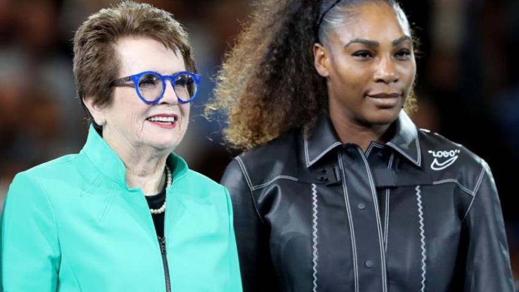
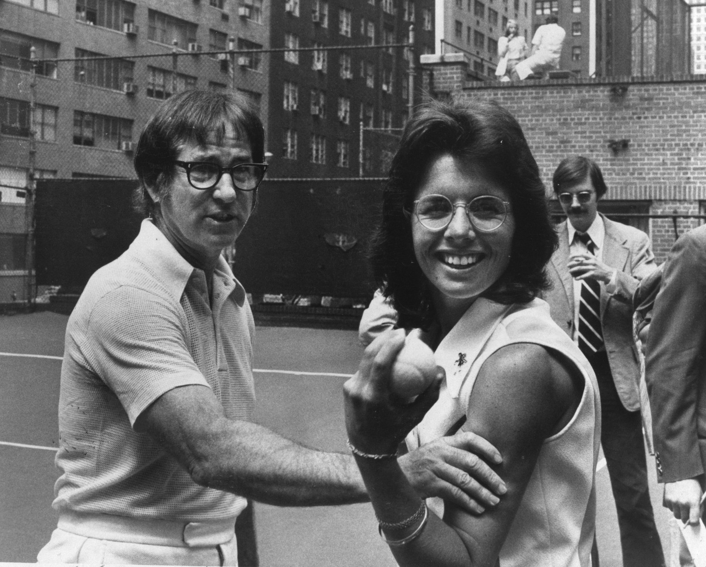

Inicio
Controversias

La leyenda del tenis Billie Jean King se mostró hoy partidaria de cambiarle el nombre al estadio Margaret Court Arena del Melbourne Park por los repetidos comentarios contra la comunidad gay que hizo su antigua rival. King, de 74 años, aseguró hoy en Australia que abogó por colocar ese nombre al segundo estadio en importancia del Melbourne Park, pero al escuchar los comentarios de Court, quisiera que se cambiara la denominación. "Personalmente, no creo que el estadio deba seguir llevando su nombre", aseguró King, que regresó a Australia después de ocho años y que ha llevado adelante una lucha incansable por los derechos de las mujeres en el circuito. "Es realmente importante, que si tienes tu nombre en algún sitio, que seas hospitalario e inclusivo, que le abras los brazos a todos los que llegan a un establecimiento público", añadió King, nominada la "Mujer del Año" por el tenis australiano al cumplirse 50 años de su único triunfo en el Grand Slam local.
La ex número uno del mundo Billie Jean King, que había salido a apoyar a Serena Williams, suavizó su postura inicial y dijo que Williams estaba "totalmente fuera de lugar" cuando disputó con vehemencia las llamadas del juez de silla Carlos Ramos durante la final del US Open del sábado. Ramos, sin embargo, podría haber evitado el asunto si se hubiera comunicado mejor y le hubiera dado a Williams una 'advertencia suave' en lugar de una violación del código cuando vio a su entrenador Patrick Mouratoglou dando señales durante el partido, dijo King. Williams recibió una advertencia, un punto y luego una penalización de juego después de discutir con Ramos durante la final, que ganó 6-2, 6-4 por la japonesa Naomi Osaka. “Serena estaba fuera de lugar. No hay duda”, dijo King a CNN el martes. "Nadie está diciendo que ella era un buen deportista. Si lo son, están locos".
Bobby Riggs no lanzó la Batalla de los Sexos, dijo Billie Jean King, más recientemente en un chat en la calle con TMZ. La leyenda del tenis niega enfáticamente las recientes acusaciones hechas en un artículo de ESPN que sugería que Riggs tiró el famoso partido de 1973 para saldar una deuda de la mafia . “Simplemente le golpeé el trasero y eso es todo”, dijo King, señalando que el entrenador de Riggs y el promotor del partido están de acuerdo con ella.
